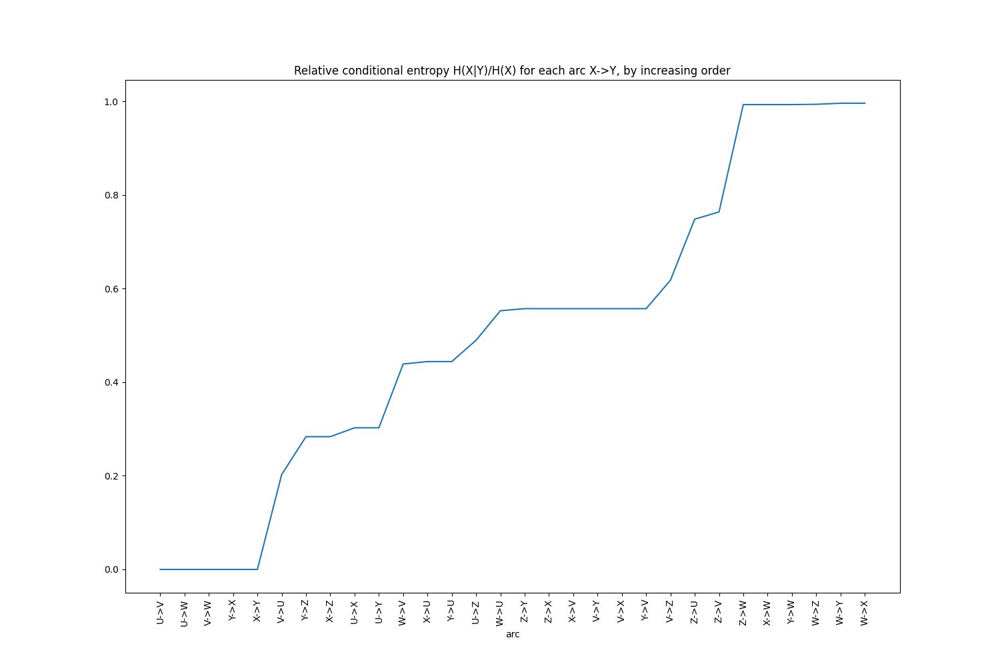

Note
Click here to download the full example code
Removing correlated variables¶
In this example we show how to remove correlated categorical variables.
1. Strict determinism¶
Let's consider the following dataset:
import pandas as pd
df = pd.DataFrame({
'U': ["a", "b", "d", "a", "b", "c", "a", "b", "d", "c"],
'V': ["a", "b", "c", "a", "b", "c", "a", "b", "c", "c"],
'W': ["a", "b", "b", "a", "b", "b", "a", "b", "b", "b"],
'X': ["a", "a", "b", "b", "a", "c", "c", "a", "b", "c"],
'Y': ["b", "b", "c", "c", "b", "a", "a", "b", "c", "a"],
'Z': ["a", "a", "b", "a", "a", "b", "b", "a", "a", "b"]
})
print("Columns in df: %s" % list(df.columns))
df
Out:
Columns in df: ['U', 'V', 'W', 'X', 'Y', 'Z']
We can detect correlated categorical variables (functional dependencies):
from qdscreen import qd_screen
# detect strict deterministic relationships
qd_forest = qd_screen(df)
print(qd_forest)
Out:
QDForest (6 vars):
- 3 roots (1+2*): U*, X*, Z
- 3 other nodes: V, W, Y
U
└─ V
└─ W
X
└─ Y
So with only features U, and X we should be able to predict V, W, and Y. Z is a root but has no children
so it does not help.
We can create a feature selection model from this deterministic forest object:
feat_selector = qd_forest.fit_selector_model(df)
feat_selector
Out:
/home/runner/work/qdscreen/qdscreen/.nox/publish-3-9/lib/python3.9/site-packages/qdscreen/selector.py:16: FutureWarning: Unlike other reduction functions (e.g. `skew`, `kurtosis`), the default behavior of `mode` typically preserves the axis it acts along. In SciPy 1.11.0, this behavior will change: the default value of `keepdims` will become False, the `axis` over which the statistic is taken will be eliminated, and the value None will no longer be accepted. Set `keepdims` to True or False to avoid this warning.
return scipy_mode(x)[0][0]
/home/runner/work/qdscreen/qdscreen/.nox/publish-3-9/lib/python3.9/site-packages/scipy/stats/_stats_py.py:110: RuntimeWarning: The input array could not be properly checked for nan values. nan values will be ignored.
warnings.warn("The input array could not be properly "
/home/runner/work/qdscreen/qdscreen/.nox/publish-3-9/lib/python3.9/site-packages/qdscreen/selector.py:16: FutureWarning: Unlike other reduction functions (e.g. `skew`, `kurtosis`), the default behavior of `mode` typically preserves the axis it acts along. In SciPy 1.11.0, this behavior will change: the default value of `keepdims` will become False, the `axis` over which the statistic is taken will be eliminated, and the value None will no longer be accepted. Set `keepdims` to True or False to avoid this warning.
return scipy_mode(x)[0][0]
/home/runner/work/qdscreen/qdscreen/.nox/publish-3-9/lib/python3.9/site-packages/scipy/stats/_stats_py.py:110: RuntimeWarning: The input array could not be properly checked for nan values. nan values will be ignored.
warnings.warn("The input array could not be properly "
/home/runner/work/qdscreen/qdscreen/.nox/publish-3-9/lib/python3.9/site-packages/qdscreen/selector.py:16: FutureWarning: Unlike other reduction functions (e.g. `skew`, `kurtosis`), the default behavior of `mode` typically preserves the axis it acts along. In SciPy 1.11.0, this behavior will change: the default value of `keepdims` will become False, the `axis` over which the statistic is taken will be eliminated, and the value None will no longer be accepted. Set `keepdims` to True or False to avoid this warning.
return scipy_mode(x)[0][0]
/home/runner/work/qdscreen/qdscreen/.nox/publish-3-9/lib/python3.9/site-packages/scipy/stats/_stats_py.py:110: RuntimeWarning: The input array could not be properly checked for nan values. nan values will be ignored.
warnings.warn("The input array could not be properly "
<qdscreen.selector.QDSelectorModel object at 0x7fa93f927370>
This model can be used to preprocess the dataset before a learning task:
only_important_features_df = feat_selector.remove_qd(df)
only_important_features_df
It can also be used to restore the dependent columns from the remaining ones:
restored_full_df = feat_selector.predict_qd(only_important_features_df)
restored_full_df
Note that the order of columns differs from origin, but apart from this, the restored dataframe is the same as the original:
pd.testing.assert_frame_equal(df, restored_full_df[df.columns])
2. Quasi determinism¶
In the above example, we used the default settings for qd_screen. By default only deterministic relationships are
detected, which means that only variables that can perfectly be predicted (without loss of information) from others
in the dataset are removed.
In real-world datasets, some noise can occur in the data, or some very rare cases might happen, that you may wish to
discard. Let's first look at the strength of the various relationships thanks to keep_stats=True:
# same than above, but this time remember the various indicators
qd_forest = qd_screen(df, keep_stats=True)
# display them
print(qd_forest.stats)
Out:
Statistics computed for dataset:
U V W X Y Z
0 a a a a b a
1 b b b a b a
...(10 rows)
Entropies (H):
U 1.970951
V 1.570951
W 0.881291
X 1.570951
Y 1.570951
Z 0.970951
dtype: float64
Conditional entropies (Hcond = H(row|col)):
U V W X Y Z
U 0.000000 0.400000 1.089660 0.875489 0.875489 1.475489
V 0.000000 0.000000 0.689660 0.875489 0.875489 1.200000
W 0.000000 0.000000 0.000000 0.875489 0.875489 0.875489
X 0.475489 0.875489 1.565148 0.000000 0.000000 0.875489
Y 0.475489 0.875489 1.565148 0.000000 0.000000 0.875489
Z 0.475489 0.600000 0.965148 0.275489 0.275489 0.000000
Relative conditional entropies (Hcond_rel = H(row|col)/H(row)):
U V W X Y Z
U 0.000000 0.202948 0.552860 0.444196 0.444196 0.748618
V 0.000000 0.000000 0.439008 0.557299 0.557299 0.763869
W 0.000000 0.000000 0.000000 0.993416 0.993416 0.993416
X 0.302676 0.557299 0.996307 0.000000 0.000000 0.557299
Y 0.302676 0.557299 0.996307 0.000000 0.000000 0.557299
Z 0.489715 0.617951 0.994024 0.283731 0.283731 0.000000
In the last row of the last table (relative conditional entropies) we see that variable Z's entropies decreases
drastically to reach 28% of its initial entropy, if X or Y is known. So if we use quasi-determinism with relative
threshold of 29% Z would be eliminated.
# detect quasi deterministic relationships
qd_forest2 = qd_screen(df, relative_eps=0.29)
print(qd_forest2)
Out:
QDForest (6 vars):
- 2 roots (0+2*): U*, X*
- 4 other nodes: V, W, Y, Z
U
└─ V
└─ W
X
└─ Y
└─ Z
This time Z is correctly determined as being predictible from X.
equivalent nodes
X and Y are equivalent variables so each of them could be the parent of the other. To avoid cycles so that the
result is still a forest (a set of trees), X was arbitrary selected as being the "representative" parent of all
its equivalents, and Z is attached to this representative parent.
Another, easier way to detect that setting a relative threshold to 29% would eliminate Z is to print the
conditional entropies in increasing order:
ce_df = qd_forest.get_entropies_table(from_to=False, sort_by="rel_cond_entropy")
ce_df.head(10)
Or to use the helper plot function:
qd_forest.plot_increasing_entropies()

3. Integrating with scikit-learn¶
scikit-learn is one of the most popular machine learning frameworks in python. It comes with a concept of
Pipeline allowing you to chain several operators to make a model. qdscreen provides a QDScreen class for easy
integration. It works exactly like other feature selection models in scikit-learn (e.g.
VarianceThreshold):
from qdscreen.sklearn import QDScreen
X = [[0, 2, 0, 3],
[0, 1, 4, 3],
[0, 1, 1, 3]]
selector = QDScreen()
Xsel = selector.fit_transform(X)
Xsel
Out:
/home/runner/work/qdscreen/qdscreen/.nox/publish-3-9/lib/python3.9/site-packages/qdscreen/selector.py:16: FutureWarning: Unlike other reduction functions (e.g. `skew`, `kurtosis`), the default behavior of `mode` typically preserves the axis it acts along. In SciPy 1.11.0, this behavior will change: the default value of `keepdims` will become False, the `axis` over which the statistic is taken will be eliminated, and the value None will no longer be accepted. Set `keepdims` to True or False to avoid this warning.
return scipy_mode(x)[0][0]
/home/runner/work/qdscreen/qdscreen/.nox/publish-3-9/lib/python3.9/site-packages/qdscreen/selector.py:16: FutureWarning: Unlike other reduction functions (e.g. `skew`, `kurtosis`), the default behavior of `mode` typically preserves the axis it acts along. In SciPy 1.11.0, this behavior will change: the default value of `keepdims` will become False, the `axis` over which the statistic is taken will be eliminated, and the value None will no longer be accepted. Set `keepdims` to True or False to avoid this warning.
return scipy_mode(x)[0][0]
/home/runner/work/qdscreen/qdscreen/.nox/publish-3-9/lib/python3.9/site-packages/qdscreen/selector.py:16: FutureWarning: Unlike other reduction functions (e.g. `skew`, `kurtosis`), the default behavior of `mode` typically preserves the axis it acts along. In SciPy 1.11.0, this behavior will change: the default value of `keepdims` will become False, the `axis` over which the statistic is taken will be eliminated, and the value None will no longer be accepted. Set `keepdims` to True or False to avoid this warning.
return scipy_mode(x)[0][0]
array([[0],
[4],
[1]])
selector.inverse_transform(Xsel)
Out:
array([[0, 2, 0, 3],
[0, 1, 4, 3],
[0, 1, 1, 3]])
Total running time of the script: ( 0 minutes 1.344 seconds)
Download Python source code: 1_remove_correlated_vars_demo.py
Download Jupyter notebook: 1_remove_correlated_vars_demo.ipynb